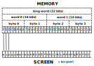

Low Resolution
Low Resolution
This article is part of a study about the ports of Another World. It is highly recommended to read Another World 101 before reading this.
The genesis of the Atari ST is tumultuous to say the least. It starts like a fairy tale and ends in war and betrayals involving Amiga Corp, Commodore, Atari, and Atari Computer division.
In 1983, Hi-Toro was a Santa Clara based startup building a video-game console called "Lorraine". Featuring a powerful 68000 with breath-taking graphics capabilities, it was a technological marvel far superior to all its competitors. Hi-Toro however was running out of cash. Atari, then video-game giant, injected $500,000 to keep development ongoing in exchange of the right to add a keyboard and sell the console as a computer. Everybody won.
Far from California, in Pennsylvania, a power struggle at Commodore resulted in the departure of its founder Jack Tramiel. He immediately formed Tramel Technology, poaching Commodore engineers in the process. Needless to say the separation was far from amicable.
By mid-1984 it was Atari's turn to be in financial turmoil. When Jack Tramiel expressed interests in buying Atari's Computer division, Commodore saw an opportunity to move against its ex-CEO. They snapped the tech away by buying Hi-Toro (which had renamed itself Amiga Corporation by then) and only refunded Atari for its "loan"[1].
Tramiel completed the acquisition of Atari Computers and immediately sued Amiga Corporation. The matter would not be settled until March 1987[2]. Meanwhile Atari found itself without a new tech to make itself profitable again[3].
For a while Jack Tramiel considered buying the Genesis from Sega who was looking for a partner with experience in North America. Ultimately, the idea was rejected. What happened next is recounted by DadHacker[4][5]. Jack Tramiel kept only 900 out of 10,000 Atari employees. The survivors engaged in a death march with the goal to design and release a new machine within a year.
Amazingly they made it. The Atari ST was released in June 1985, beating the Amiga 1000 to market by a month.
Consumers of the time had the choice of going with an Amiga or picking up a machine which was $300 cheaper, had more RAM, but with "only" 16 colors. Needless to say many opted for an ST.
Beside its main selling point, the machine has some noteworthy advantages over the competition. The monochrome 640x400 high-resolution mode was a thing of beauty to programmers. The built-in MIDI interface was appreciated by musicians. Small detail which may have mattered, the operating system (TOS) and the kernel were actually in the ROM. There was no need for a floppy disk to boot!
The Atari ST quickly gathered a cult-following, particularly in Europe. Devotion to the ST was such that demo-makers obsessively attempted to develop overscan techniques[6][7][8][9] to remove the black screen borders. They ultimately were successful[10].
Over the course of its life, from 1985 until 1993, Atari Computers sold 2 million units[11]. To many who lived through it, this era is remembered as the infamous Amiga vs Atari ST war.
From a CG, animation and video-games standing point however, there was not much of a war. Not even a battle. With its Agnus and Denise co-processors, the Amiga was vastly superior to the Atari ST. As an example, the memory layout of the Atari ST framebuffer was excruciating when attempting to move a sprite across the screen.
To palliate to its shortcomings, Atari Computers refreshed the Atari ST line in 1989 with its 520 STE and 1040 STE. Among the improvements, a Genlock, 12-bit colors, PCM audio, and most importantly a BLiTTER[12] beefed up the Atari ST with technology enabling it to rival with the Amiga.
The capabilities of the STE Blitter were invaluable to a game programmer. Unfortunately it came too late. There was a huge base of Atari ST which deterred developers from investing the time to make their game run better for a minority of users. Not to mention nobody dared releasing an "STE only" title. Another World is no exception as the developer of the Jaguar version (who saw the Atari ST source code) confirms.
Another World was entirely programmed to run on the 68000. The capabilities of the STE were not used at all.
- Sébastien Briais
Note that there is a DMA controller on all Atari ST but it can only transfer from the floppy/HDD to RAM which does not help game programming much. This left a programmer with very little. Namely the Motorola 68000 processor running at 8MHz and 512 KiB RAM.
Good luck Jim
The GLUE chip in charge of generating the video signal uses 3-bit per channel (9 bits per pixel) resulting in 512 colors.
|
|
|
Trivia: It is by manipulating the Shifter, the GLUE, and the MMU that demomaker managed to remove the infamous Atari screen black borders. The techniques of "overscan" and "fullscreen" switch the refresh frequency between 50Hz and 60Hz and also move from hiRes to LowRes before a scanline is completed in order to trick the GLUE into delaying VSYNC/HSYNC signals[13]!
Another World on Atari ST was entirely written by Eric Chahi in parallel with the Amiga version. The 68000 CPU, similar to the Amiga, made the port easier since a lot of the VM ASM was reusable. Things differ on the graphic side where three modes are available. High resolution (640x400 2 colors) which is great for programming, Medium resolution (640x200 4 colors) which is not very interesting in this context, and Low resolution 320x200, 16 colors[14] which is a perfect match for Another World.
|  High Resolution |
Low Resolution
|
To a game using sprites, the lowRes woven layout was a difficulty. Try to picture the exercise of masking/writing with one bit resolution when the bus resolution is one byte (8 bits). Now picture a sprite crossing bytes boundary and the task turns into a nightmare[15]. It was in fact so CPU intensive that games did not use mask/write and instead preferred to use pre-rotated sprites (one set for each bit alignment) which, to the Atari ST credit, was not too much of a problem given the generous amount of RAM on-board.
Interestingly for Another World, the interleaved graphic layout hell turns into a paradise when it comes to writing long lines of a single color. Let's see why.
With only a CPU to perform FILL and COPY, these task are done in the most simple way. There are no clever trick here but the non-planar layout of the frambuffer allows the 68000 to "cruise". With a framebuffer made of 32KiB, 8000 long (32 bits) move.l operations do the job in both cases. The disassembly output of the 68000 portion of COPY is as follow.
...
move.w #49,d0 ;50*160*4 = 32000 octets
.copy_loop:
rept 160
move.l (a1)+,(a0)+
endr
dbra d0,.copy_loop
...
Since the 68000 timing are very well documented[16][17] we can calculate exactly how long a framebuffer COPY operations needs to complete. Since this type of "move.l" takes 20 cycles to run, the total number of cycles required is 20 * 160 * 50 = 160,000 cycles. At 8,000,000 cycles/seconds, COPY took 20ms to complete.
Same idea for FILL except that instead of "Address register indirect with post-incrementing" operand, the first operand of move.l instruction is a "Data direct"which takes "only" 12 cycles. This give a total of 12ms for FILL.
...
move.w #49,d0 ;50*160*4 = 32000 octets
.fill_loop:
rept 160
; d1 = color repeated 8 times since d1=32 bits and color index=4 bits)
move.l d1,(a0)+
endr
dbra d0,.fill_loop
...
Trivia: The Atari ST and the Amiga version can easily be told apart from all others ports.
At the beginning of the game, Lester encounters a harmless scarab which is gone starting with the PC version[18]. These latter ports had more levels requesting the scarab animation to be cut.
Without a "line drawing mode" and "area filling mode", the Atari ST port uses a simple Bresenham algorithm to follow polygon edges. With two edges, horizontal lines start and end screen space coordinates are generated. Then the 68000 fills the space between them[19]. The overall works exactly like the Amiga Blitter except that everything is done in software here.
It may look really slow but the "cruising speed" can also be reached here by taking advantage of the woven layout. If you look closely, most Another World frames are made of long horizontal lines of the same color. This allows the 68000 to write lines in block of 16 pixels with the move.l instructions we saw earlier.
The screen where Lester meets his "savior" is a good example.
 Here we can see, in red, parts of lines which cannot be rendered in 16 pixels blocks because of framebuffer layout and alignment. These "slow" pixels only account for 23% of the framebuffer at the edge of polygons. 77% of the framebuffer is rendered with "fast" 16 pixels blocks writes.
Here we can see, in red, parts of lines which cannot be rendered in 16 pixels blocks because of framebuffer layout and alignment. These "slow" pixels only account for 23% of the framebuffer at the edge of polygons. 77% of the framebuffer is rendered with "fast" 16 pixels blocks writes.
The last problem to solve is related to The Atari ST having a shallow-ish color depth. While the Amiga allows 12 bits per color, the AtariST can only do 9 bits per color.
The solution was to ship the game with the Amiga palettes and let the 68000 take care of converting from 12-bit to 9-bit with a simple 1-bit LSR for each channel at load time.
The result is a little bit darker compared to the Amiga but overall barely noticeable[20].
Despite obvious disadvantages, the Atari ST managed to run a faithful version of Another World. Against all odds, the game does not have to shy away compared to the Amiga. The smaller color space was barely noticeable and the engine managed to perform only slightly slower[21] than the Amiga (which ran close to 24fps). Chapeau bas.
Tomorrow, Another World on IBM PC/DOS.